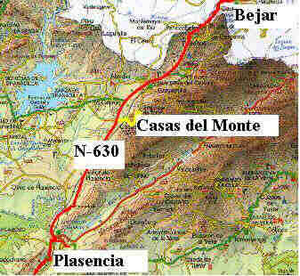
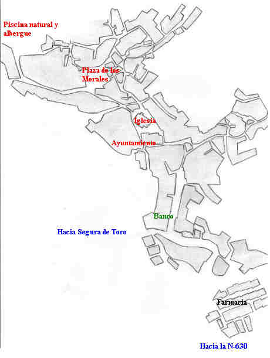

Desde Madrid la ruta más corta es por la Nacional V hasta Navalmoral de la Mata
y a continuación dirección Plasencia. Tiempo de viaje desde Madrid
aproximadamente 3 horas
Desde Madrid la ruta más corta es por la Nacional V hasta Navalmoral de la Mata
y a continuación dirección Plasencia. Tiempo de viaje desde Madrid
aproximadamente 3 horas

Casas del Monte se encuentra en la provincia de Cáceres a 4 Km. de la
N630 Gijón Sevilla y a una distancia de 26 Km. de Plasencia y 34 de Béjar
(Salamanca)

Callejero de Casas del
Monte. Se puede acceder al pueblo desde Segura de Toro y desde la N-630, para
evitar pérdidas le aconsejamos que entren desde la nacional